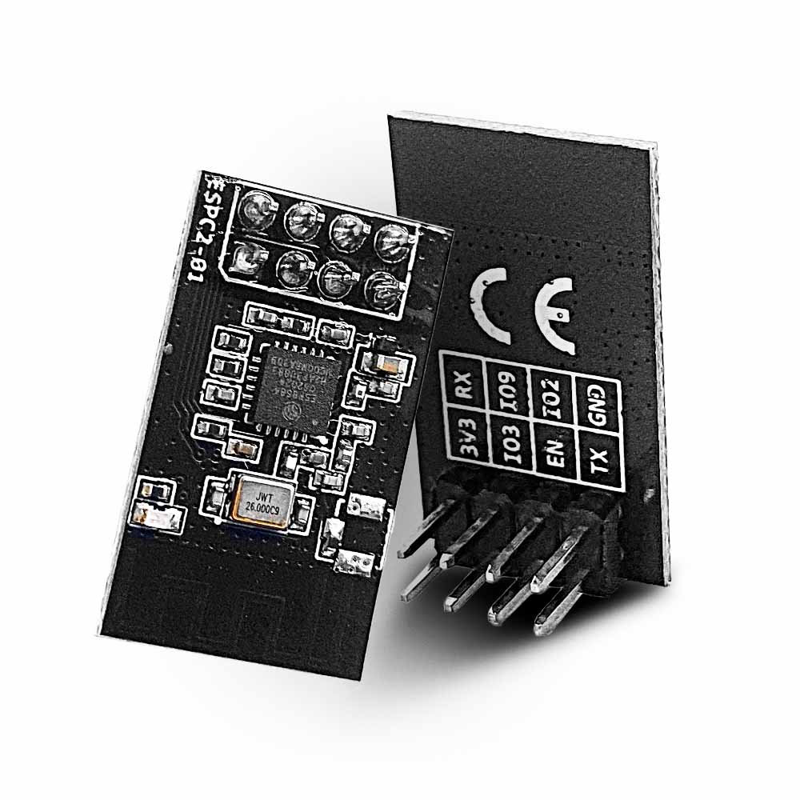

Note
Hello, welcome to the SunFounder Raspberry Pi & Arduino & ESP32 Enthusiasts Community on Facebook! Dive deeper into Raspberry Pi, Arduino, and ESP32 with fellow enthusiasts.
Why Join?
Expert Support: Solve real-life coding problems and technical challenges with our community and team.
Learn & Share: Exchange tips, tutorials, and projects to enhance your skills.
Exclusive Previews: Get early access to new product announcements and sneak peeks.
Festive Promotions and Giveaways: Take part in giveaways and holiday promotions.
👉 Ready to explore and create with us? Click [here] and join today!
ESPC2-01 Module


The ESPC2-01 is a Wi-Fi and Bluetooth LE module built around the ESP32-C2 chip (also sold as ESP8684), made by Espressif Systems. A single module provides both the Wi-Fi connection and the Bluetooth LE link used by the projects in this kit.
Internally the module runs the Espressif ESP-AT firmware, so it is driven with plain AT commands over a serial port.
The module plugs directly into the Wi-Fi adapter supplied with the kit - no jumper wires are needed. The adapter carries the 3.3 V regulator and the level conversion between the 5 V board and the 3.3 V module.
Pins of the ESPC2-01 and their functions:
Name |
Description |
|---|---|
3V3 |
Power supply, 3.3 V only. |
GND |
Ground. |
EN |
Chip enable, pulled up on the module. Pull to GND to reset the chip. |
TX0 |
UART0 transmit, GPIO20. Data from the module to the board. |
RX0 |
UART0 receive, GPIO19. Data from the board to the module. |
IO9 |
Boot mode select. Pull to GND at power-up to enter download mode. |
IO2 |
General purpose IO, not used in this kit. |
IO3 |
General purpose IO, not used in this kit. |
Features and specifications
Chip: ESP32-C2 (ESP8684H2), single core 32-bit RISC-V
Wi-Fi: 802.11 b/g/n (Wi-Fi 4), 2.4 GHz only
Bluetooth: Bluetooth LE 5.0 - Classic Bluetooth is not supported
Flash: 2 MB
SRAM: 272 KB
Firmware: ESP-AT v4.1.1.0, custom build that contains both the Wi-Fi AT and the BLE AT command sets
Serial port: 115200, 8 data bits, no parity, 1 stop bit, no flow control
Module UART pins: TX0 = GPIO20, RX0 = GPIO19
Supply voltage: 3.3 V (there is no 5 V pin)
Peak current: more than 400 mA during Wi-Fi / Bluetooth start-up
Logic level: 3.3 V - the pins are not 5 V tolerant (absolute maximum 3.6 V)
Antenna: PCB antenna
Dimensions: 24 mm x 14 mm x 1.6 mm (about 12 mm high with the header soldered)
Important
The module runs at 3.3 V and its pins are not 5 V tolerant (absolute maximum 3.6 V). The adapter supplied with the kit performs the level conversion, so the module can be plugged straight into it - never wire the module to a 5 V signal without that adapter.
The kit also needs the 9V battery (or a 6.5 - 12 V DC supply). Powered from USB alone the 3.3 V rail collapses when the module starts, and it never answers AT commands.